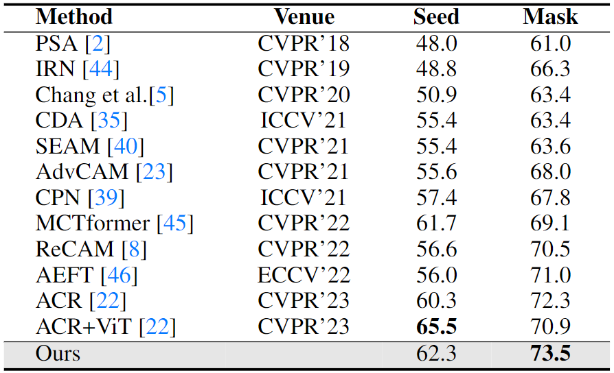
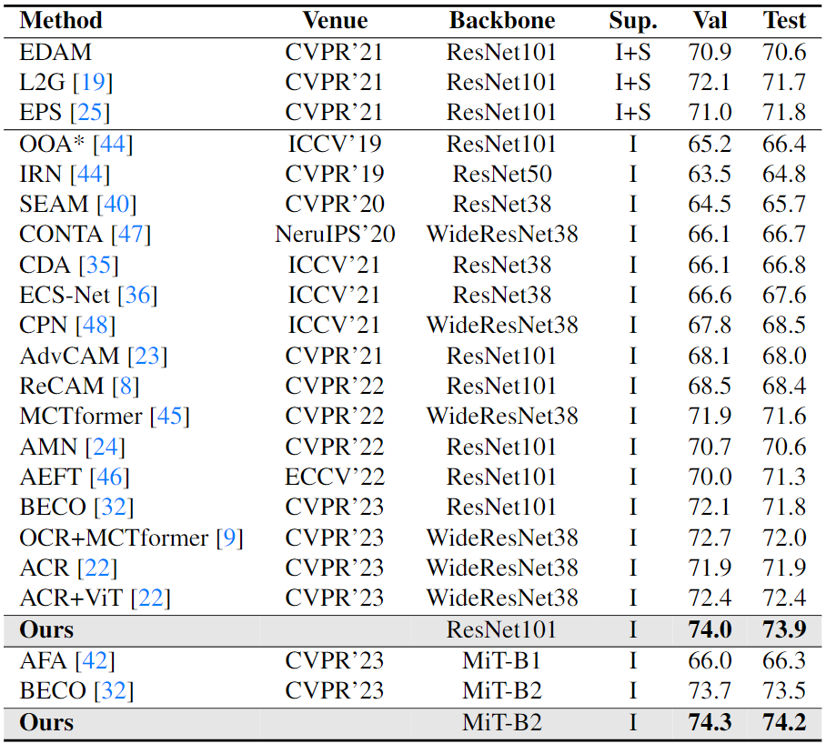
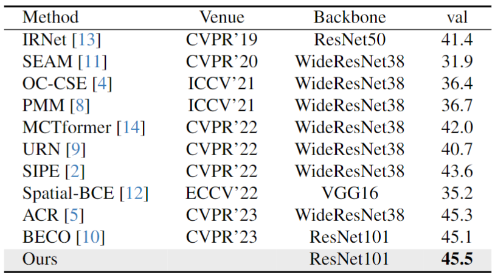

CoBra: Complementary Branch Fusing Class and Semantic Knowledge for Robust Weakly Supervised Semantic Segmentation
Motivation
 While Class Activation Maps (CAMs) using CNNs have steadily been contributing to the success of WSSS, the resulting activation maps often narrowly focus on class-specific parts (e.g., only face of human). On the other hand, recent works based on vision transformers (ViT) have shown promising results based on their self-attention mechanism to capture the semantic parts but fail in capturing complete class-specific details (e.g., entire body parts of human but also with a dog nearby).
While Class Activation Maps (CAMs) using CNNs have steadily been contributing to the success of WSSS, the resulting activation maps often narrowly focus on class-specific parts (e.g., only face of human). On the other hand, recent works based on vision transformers (ViT) have shown promising results based on their self-attention mechanism to capture the semantic parts but fail in capturing complete class-specific details (e.g., entire body parts of human but also with a dog nearby). The figure shows the comparison of object localization maps from each CNN, ViT, and Cobra branches for various subjects (human, dog, airplane), illustrating the distinctive areas of interest each model identifies. Our model successfully utilizes complementary characteristics to localize the exact object of the correct class and its semantic parts.
Key Contribution
Main model
Overview illustration of our model.
(I) Class Aware Knoweldge(CAK): The CNN outputs a feature map which generates (1) CNN CAMs via $f_{CAM}$, (2) Pseudo-Labels from CNN CAMs via $argmax$, and (3) Class-Aware Projection (CAP) via $f_{proj}$.
(II) Semantic Aware Knowledge(SAK): The ViT outputs $N^2$ Patch Embeddings which generate (1) ViT CAMs via $f_{CAM}$ and (2) Semantic-Aware Projection (SAP) via $f_{proj}$. We also use the Attention Maps of all $L$-layers to generate (3) Patch Affinity of size $N^2 \times N^2$.
Method
Illustration of refining CAP and SAP from SAK and CAK branch respectively.
(I) Class Aware Knoweldge(CAK): The CAP values are embedded in the Class Feature Space. (1) The patch affinity from SAK branch assigns the positive (green), negative (red), and neutral (teal) patches based on the target (white) patch. (2) The CNN CAM shows that the false negative patches have been weakly localized as horse. (3) The CAP loss pull those weakly localized patches (i.e., false class negatives) since they are assigned as semantically positive patches based on SAK branch. (3) The CAP is refined to improve the CNN CAM showing fewer false class negatives.
(II) Semantic Aware Knowledge(SAK): The SAP values are embedded in the Semantic Feature Space. (1) The CNN CAM from CAK branch assigns the positive (green), negative (red), and neutral (teal) patches based on the target (white) patch. (2) The ViT CAM shows that the negative patches have been incorrectly localized as horse. The SAP loss pushes away those incorrectly localized patches (i.e., false class positives) since they are assigned as negative patches based on CAK branch. (3) The SAP is refined to improve the ViT CAM showing fewer false class positives.
Quantitative Experiments
Pascal VOC 2012 seed & mask results

Evaluation of initial seed and corresponding pseudo segmentation mask on PASCAL VOC 2012 training set in mIoU (%).
Pascal VOC 2012 segmentation results

Semantic segmentation results on the validation (Val) and Test set of PASCAL VOC 2012 dataset. Sup. (Supervision) : Image (I) and Saliency Map (S).
MS-COCO 2014 segmentation results

Semgentation mIoU results(%) on MS-COCO 2014 val dataset
Semgentation mIoU results(%) on MS-COCO 2014 val dataset
Qualitative Experiments
Seed Results
Qualitative results. From left: (1) Input image, (2) Our result, (3) CNN CAM of our model, (4) Ours without SAP Loss, (5) ViT CAM of our model, (6) Ours without CAP Loss, (7) Our Pseudo mask for segmentation and (8) ground-truth segmentation label. We see that our results are able to differentiate between classes while finding their accurate object boundaries.
Pascal VOC Segmentation Results
Qualitative seg results on the PASCAL VOC val set.
MS COCO Segmentation Results
Qualitative seg results on the MS COCO val set.